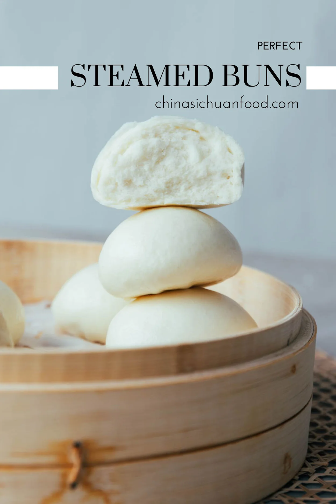

Steamed Dishes
1. Chinese Steamed Buns (Baozi)

Ingredients:
- 2 cups All-purpose flour
- 1/2 cup Warm water
- 1 teaspoon Yeast
- 1/4 cup Sugar
- 250g Ground pork
- 1 tablespoon Soy sauce
- 1 tablespoon Oyster sauce
Instructions:
- Mix yeast, warm water, and sugar, and let it activate for 5-10 minutes.
- Combine the flour with the yeast mixture to form the dough. Knead until smooth and elastic, then let it rise for 1 hour.
- In a bowl, mix ground pork, soy sauce, oyster sauce, and seasonings. Shape the dough into small buns and fill with the pork mixture.
- Steam the buns for about 15-20 minutes until cooked through.
- Serve warm.
2. Steamed Tofu with Soy Sauce

Ingredients:
- 1 block Silken tofu
- 2 tablespoons Soy sauce
- 1 tablespoon Sesame oil
- 1 tablespoon Chopped scallions
Instructions:
- Place tofu on a steaming plate and steam for 10 minutes.
- While steaming, prepare the soy sauce and sesame oil mixture.
- Once tofu is steamed, pour the sauce over the tofu and top with chopped scallions.
- Serve with steamed rice.